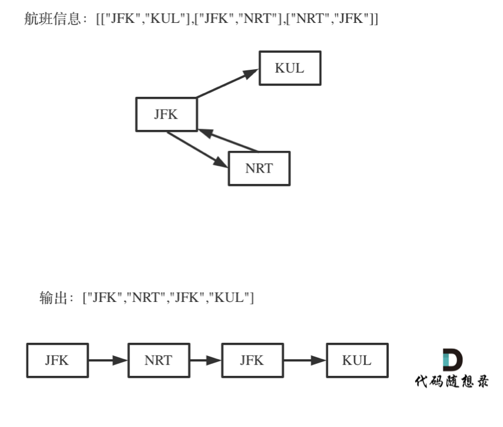

Leecode 回溯 重新安排行程
描述
给定一个机票的字符串二维数组 [from, to]，子数组中的两个成员分别表示飞机出发和降落的机场地点，对该行程进行重新规划排序。所有这些机票都属于一个从 JFK（肯尼迪国际机场）出发的先生，所以该行程必须从 JFK 开始。
提示：
- 如果存在多种有效的行程，请你按字符自然排序返回最小的行程组合。例如，行程 [“JFK”, “LGA”] 与 [“JFK”, “LGB”] 相比就更小，排序更靠前
- 所有的机场都用三个大写字母表示（机场代码）。
- 假定所有机票至少存在一种合理的行程。
- 所有的机票必须都用一次 且 只能用一次。
示例 1：
- 输入：[[“MUC”, “LHR”], [“JFK”, “MUC”], [“SFO”, “SJC”], [“LHR”, “SFO”]]
- 输出：[“JFK”, “MUC”, “LHR”, “SFO”, “SJC”]
示例 2：
- 输入：[[“JFK”,”SFO”],[“JFK”,”ATL”],[“SFO”,”ATL”],[“ATL”,”JFK”],[“ATL”,”SFO”]]
- 输出：[“JFK”,”ATL”,”JFK”,”SFO”,”ATL”,”SFO”]
- 解释：另一种有效的行程是 [“JFK”,”SFO”,”ATL”,”JFK”,”ATL”,”SFO”]。但是它自然排序更大更靠后。
思路
这道题目还是很难的,直觉上来看 这道题和回溯法没有什么关系，更像是图论中的深度优先搜索。
实际上确实是深搜，但这是深搜中使用了回溯的例子，在查找路径的时候，如果不回溯，怎么能查到目标路径呢。
所以我倾向于说本题应该使用回溯法，那么我也用回溯法的思路来讲解本题，其实深搜一般都使用了回溯法的思路，在图论系列中我会再详细讲解深搜。
这道题目有几个难点：
- 一个行程中，如果航班处理不好容易变成一个圈，成为死循环
- 有多种解法，字母序靠前排在前面，让很多同学望而退步，如何该记录映射关系呢 ？
- 使用回溯法（也可以说深搜） 的话，那么终止条件是什么呢？
- 搜索的过程中，如何遍历一个机场所对应的所有机场。
针对以上问题逐一解答！
如何理解死循环
对于死循环，我来举一个有重复机场的例子：
为什么要举这个例子呢，就是告诉大家，出发机场和到达机场也会重复的，如果在解题的过程中没有对集合元素处理好，就会死循环。
如何记录映射关系
首先为了选取连续的机场机票，我们需要准备一个数据结构，这个数据结构可以是这样的，以起始机场字符串为索引，索引对应的
是起始机场对应的中止机场，但是仅仅只有中止机场的名字是不够的，还应该有中止机场的数量（为了防止出现死循环，所以用数字来表示机场是否已经被选择过了），这里选择Map数据结构，因为与Object类型的一个主要差异是，Map实例会维护键值对的插入顺序，这帮助我们只要为tickets排序后，Map顺序就是正确的从小到大。
1 | TicketsMap 实例： |
代码
1 | function findItinerary(tickets: string[][]): string[] { |